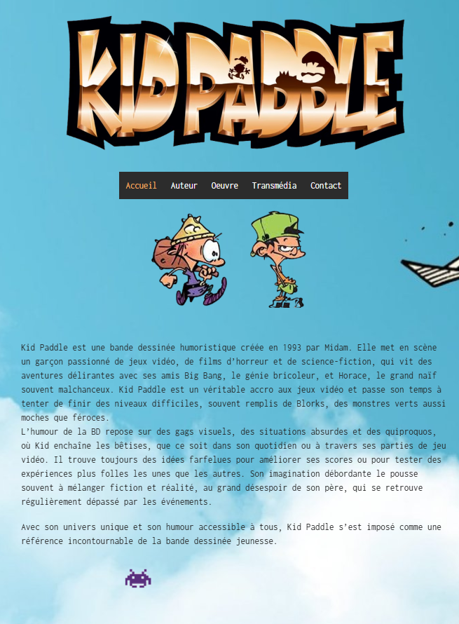
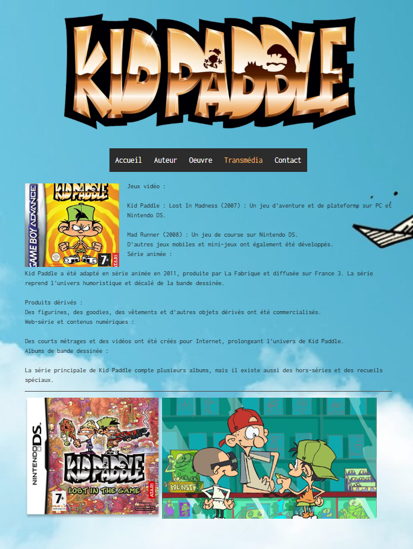

Projet Développement
Projet Développement
Ce projet consistait à développer un site web interactif autour de l’univers de Kid Paddle. L’accent a été mis sur la mise en page, l’expérience utilisateur et la fidélité à la BD originale.
L’objectif était de créer une expérience ludique pour les fans de Kid Paddle, tout en travaillant mes compétences en CMS et GIF avec Photoshop.

